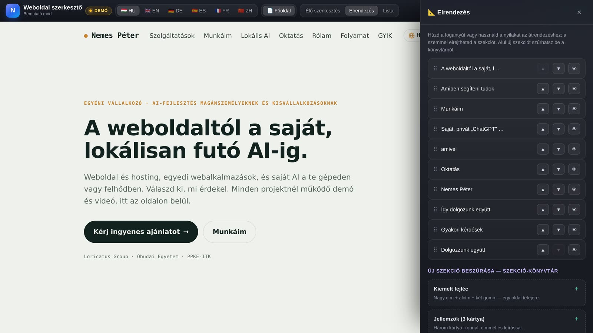
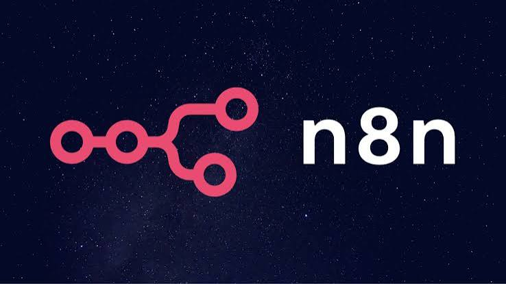

Bemutatkozó és céges oldalak, saját kézzel, a tárhely beállításával együtt.
A weboldaltól a saját, lokálisan futó AI-ig.
Weboldal és hosting, egyedi webalkalmazások, és saját AI a te gépeden vagy felhődben. Válaszd ki, mi érdekel. Minden projektnél működő demó és videó, itt az oldalon belül.
Amiben segíteni tudok
Közvetlen egyeztetéssel dolgozom, és minden megoldáshoz átadás meg rövid betanítás jár, hogy utána magad is könnyen elboldogulj vele.
Foglaló, nyilvántartó, vezérlő vagy játék, pontosan a te folyamatodra szabva.
Saját „ChatGPT" és bármilyen nyílt modell a te gépeden vagy felhődben. Az adat nálad marad.
1:1 mentorálás és céges workshop, az alapoktól a haladó, lokális AI-setupokig.
Munkáim
Válaszd ki a típust, ami érdekel, és lapozz végig a projekteken. Mobilon húzd, asztali gépen a nyilakkal.
DEMÓ · szimulált adatok
Kiemelt munka · DIMOP-pályázat
Loricatus ERP, vállalatirányítási rendszer
DIMOP-pályázat keretében megvalósított, teljes vállalatirányítás építőipari cégeknek, az ügyfelektől a projekteken át a számlázásig és jutalékig. Az „Élő demó" egy bejárható, szimulált bemutatót nyit.
Elégedett, folyamatos megrendelőm a Loricatus Group.

Loricatus, céges weboldal
Statikus bemutatkozó weboldal egy vállalkozásnak, saját kézzel írt HTML/CSS/JavaScript alapon.

Villa Uno Balaton, nyaraló foglalási oldal
Balatoni nyaraló bemutatkozó és foglalási weboldala saját domainen. Fotógaléria, többnyelvű felület és valós idejű foglalási naptár, Supabase-háttérrel.

AXONTARA, BIM & geoinformatikai eszközök
Professzionális B2B landing az AXONTARA szoftvercsaládnak. Pontfelhőből BIM-, terep- és geospatial-modellek (Click2BIM / TERRA / SLIM), founding-member modellel. Egyfájlos, reszponzív oldal.

Városmegújítás, társasházi nyilvántartás
Platform Budapest társasházainak felújítására. Strukturált felújítási kiírások (AI-illesztéssel), ellenőrzött kivitelezők, letéti fizetés és élethosszig kísérő épület-szervízkönyv 360°/BIM dokumentációval.

Weboldal szerkesztő
Saját fejlesztésű, kód nélküli tartalomszerkesztő: a szöveg, a színek és az elrendezés böngészőből, élő előnézettel módosítható, majd egy kattintással publikálható. A „Kipróbálom" gombbal magát ezt a portfóliót szerkesztheted a bemutatóban.
Pixel Art Múzeum, 3D kiállítótér
Böngészőben járható 3D múzeum négy szárnnyal, pixel-art festményekkel és betölthető GLB-modellekkel; háromnyelvű felület (HU / EN / IT). A Loricatus Group megbízásából, GIMOP-pályázat kivitelezéseként készült.
CinePair, filmválasztó pároknak
Swipe-alapú, Tinder-szerű filmválasztó alkalmazás pároknak és társaságoknak. Közös gyűjtők, valós idejű egyezés és push-értesítés. Telepíthető webalkalmazás (PWA), appbolt nélkül, egyenesen a kezdőképernyőre.
Nexus, szociálisháló-térkép
Személyes kapcsolatháló feltérképezése és vizualizációja egyfelhasználós web-appban, D3-alapú megjelenítéssel.
OBS stream-vezérlő, Óbudai Egyetem
OBS overlay-menedzser egyetemi közvetítésekhez. Külön vezérlőfelület, azonnali jelenetváltás, hotkeyek, visszaszámláló és egyedi üzenetek.
Monopoly, böngészős társas
Digitális Monopoly-társasjáték böngészőben, React + TypeScript + Vite alapon.

Task-animációk, Loricatus ERP
Teljes képernyős effektek, amelyek az ERP-ben egy új feladat születésekor játszódnak le. Kattints egy gombra, és itt, az oldalon lejátszom.
EDTI Studio, videófeldolgozó AI
Egyetemi oktatóvideó-feldolgozó platform. Magyar előadásból angol szinkron az ASR → fordítás → hangklónozott TTS láncon. A háttérben Whisper, NLLB, XTTS-v2, Demucs és FastAPI fut GPU-n. A linken bebarangolható statikus demó.

ComfyUI, vizuális AI-pipeline-ok
Node-alapú ComfyUI munkafolyamatok helyi kép- és videógeneráláshoz. Stable Diffusion és FLUX modellek, egyedi láncok (inpaint, upscale, ControlNet, kép→videó), minden a saját GPU-n, külső szolgáltató nélkül.
saját munkafolyamatok · GPU-n futtatva
Geometria-vezérelt neurális kompozitálás
Szakdolgozati kutatás a PPKE-ITK MI-szakirányán. Lokális, GPU-gyorsított látás-pipeline, amely egy egykamerás videó 3D geometriáját rekonstruálja, majd úgy illeszt be szintetikus elemeket, hogy azok helyes mélységgel, perspektívával, takarással és fénnyel üljenek a jelenetben. 10 neurális modell egyetlen fogyasztói GPU-n, végig licenc-tiszta, reprodukálható, lokális-first stacken.

Egyedi automatizációk n8n-nel
Ismétlődő feladatok automatizálása saját, self-hosted n8n-nel, pontosan a te folyamatodra szabva, az adat nálad marad. Ilyeneket építek belőle, mint pályázatfigyelő, közösségi média automatikus posztolás, chatbot és voice asszisztens, e-mail- és számlázási folyamatok, vagy rendszerek összekötése.
lokális · privát · a te eszközödön
Saját, privát „ChatGPT" a te gépeden vagy felhődben
Bármilyen nyílt modellt futtatok neked, a szövegtől a beszéden át a képig, 3D-ig és zenéig. Az adataid nem kerülnek külső szolgáltatóhoz, minden a te infrastruktúrádon fut.
Ez a videófeldolgozó rendszer önmagában 4 AI-modellt fűz egy láncba. Whisper (beszédfelismerés) → NLLB (fordítás) → XTTS-v2 (hangklónozás) → Demucs (hangszétválasztás). A felület pedig teljesen egyedi, lehet chat, irányítópult vagy egy konkrét eszköz, mint ez. Olyat építek, amilyet a te feladatod kíván.
Mit tudok futtatni
Szöveg (LLM)Llama 3 · Qwen · Mistral · Hermes
Beszéd → szövegWhisper
Szöveg → beszédPiper · XTTS · Coqui
KépStable Diffusion · FLUX
3DTripoSR · Shap-E
Zene / hangMusicGen · Stable Audio
Hol futtatható
Egy gép
Laptop vagy PC; kisebb-közepes modellek. Magánszemélynek, kipróbáláshoz, privát használatra.
Saját szerver
Iroda vagy házi szerver, akár GPU-val; több modell egyszerre, csapatnak.
Saját felhő
VPS vagy dedikált gép; bárhonnan elérhető és skálázható, az adat mégis a tiéd marad.
Eszköztár
Oktatás
Oktatást is vállalok. Amit a projekteken megtanultam, szívesen átadom, érthetően és szakzsargon nélkül. Az alapoktól a haladó, lokális AI-setupokig.
Egyéni mentorálás
1:1 konzultáció a saját feladataidon keresztül, az alapoktól.
Céges workshop
Gyakorlati képzés csapatoknak. Eszközök, prompting, automatizálás.
Lokális AI haladóknak
Saját modell-futtatás és pipeline-ok összerakása a gyakorlatban.
Rólam
Nemes Péter
AI-megoldásokkal foglalkozom, műszaki és projektmenedzsment háttérrel. Egyéni vállalkozóként főként magánszemélyeknek és kisvállalkozásoknak dolgozom, közvetlen egyeztetéssel, a te tempódban.
Minden munkához átadás és rövid betanítás jár, hogy utána magad is könnyen boldogulj vele.
Így dolgozunk együtt
1Egyeztetés
Elmondod, mire van szükséged, akár e-mailben vagy egy rövid hívásban. Szakzsargon nélkül, a te szavaiddal.
2Ajánlat
Írok egy világos, tételes ajánlatot arról, mit kapsz, mennyi idő és mennyibe kerül. Nincs rejtett meglepetés.
3Fejlesztés
Megépítem, és közben mutatom a haladást, bármikor jelezhetsz, ha valamin változtatnál.
4Átadás + betanítás
Kész állapotban adom át, és megmutatom, hogyan használd. Utána is elérsz, ha kérdésed van.
Gyakori kérdések
Mennyibe kerül?
Attól függ, mire van szükséged. Egy egyszerű weboldal egészen más, mint egy egyedi AI-rendszer. Írd meg pár sorban, mit szeretnél, és küldök rá egy tételes ajánlatot. Az első egyeztetés díjmentes.
Mennyi idő, mire elkészül?
Egy egyszerűbb oldal jellemzően pár nap, egy összetettebb rendszer inkább néhány hét. Konkrét határidőt mindig az ajánlatban rögzítek.
Kell hozzáértés az én oldalamon?
Nem kell. Kész állapotban adom át, és megmutatom, hogyan használd. Nyugodtan kérdezhetsz, végig érthetően magyarázok.
Kié lesz az adat és a kód?
A tiéd. Az elkészült megoldás és a hozzá tartozó adat a te tulajdonod. Lokális AI esetén ráadásul minden a saját eszközödön marad, nem kerül külső szolgáltatóhoz.
Mi van, ha később módosítani kell?
Az átadás után is elérsz. A kisebb módosításokat gyorsan megoldom, nagyobb bővítésre pedig adok egy új ajánlatot.
Kiállítasz számlát?
Igen. Alanyi adómentes egyéni vállalkozó vagyok. Igény szerint szerződéssel is dolgozom.
Elérhetőség
Dolgozzunk együtt
Írj pár sort arról, mire lenne szükséged, a weboldaltól a saját lokális AI-ig bármiben. Az első, 30 perces egyeztetés díjmentes és kötöttség nélküli, és általában egy napon belül válaszolok.